A Gemini Notebook deck retells the first film scene by scene — and this article turns its panels into a full English lesson in story structure, atmosphere words and character vocabulary.
The opening panel of the deck presents the most famous opening line in modern fiction in golden illuminated letters on aged parchment, beside a burning candle: "Mr and Mrs Dursley, of number four, Privet Drive, were proud to say that they were perfectly normal..." The line is a small masterclass in irony, because the Dursleys' pride in being perfectly normal is precisely the illusion that the whole story exists to dismantle. Pay attention to how much work the sentence does in a single breath: an address, a family, a mood, and a quiet promise that normality is about to be destroyed.
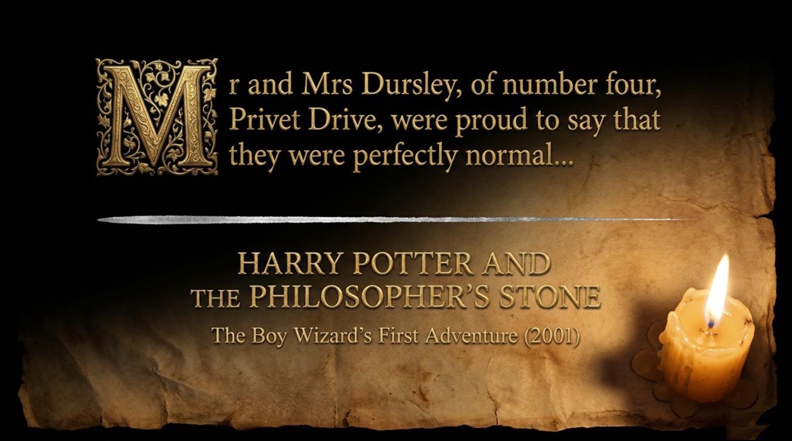
The material behind this article is a fourteen-panel illustrated presentation produced with Gemini Notebook, which retells Harry Potter and the Philosopher's Stone (2001) stage by stage, from the cupboard under the stairs to the House Cup. Each panel pairs a story beat with production history, casting anecdotes and film criticism, and the deck's final caption declares that "Magic is real, if you know where to look." It should be noted that the deck is a rich language resource in its own right: its text is full of contrast pairs, atmosphere words, character adjectives and metaphors, and the panels quote real critics such as Roger Ebert alongside real production facts. This article unpacks all of that with quotes, explanations and three interactive practice tools.
The deck is built on the classic arc that scholars call the hero's journey: The Ordinary World, The Call to Adventure, The Threshold, The Journey, The Arrival, The Descent, The Sacrifice, and finally The Bittersweet Return. Notice that these stage names are printed on the panels themselves, which makes the structure visible at a glance. 📌 The key point for a language learner is that every stage has its own vocabulary mood — drudgery and claustrophobia at the start, color and belonging in the middle, sacrifice and transformation at the end.
The deck opens the story in the Muggle world: "Orphaned as a baby, Harry's only refuge from the unwelcoming Dursley family is a claustrophobic space under the stairs. For eleven years, it is a life of drudgery, entirely devoid of magic." The margin of the panel repeats a desperate chant — "There must be more than this. There has to be." — and that chant is the engine of the entire plot. 🎬 A real-life production story illustrates the panel's obsession with getting things exactly right: director Chris Columbus insisted on Daniel Radcliffe after seeing him in the BBC's David Copperfield, casting director Susan Figgis actually resigned over Columbus being too picky, and the director finally won out after meeting Radcliffe at a London theatre production of Stones in His Pockets. 💡 A practical takeaway: describe your own "before" state with concrete nouns and strong negatives the way the deck does — a small room, a cold household, no magic — and your writing immediately becomes vivid.
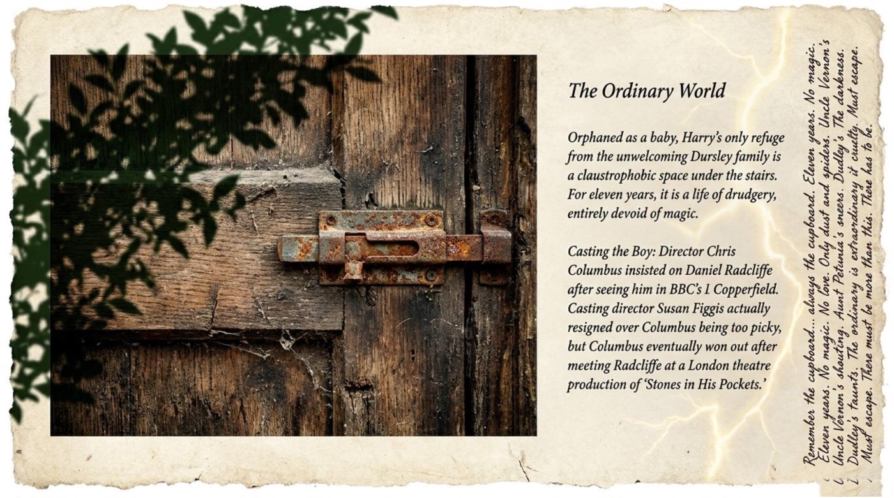
Then the letters arrive: "A blizzard of letters shatters the illusion of a normal life. The half-giant gamekeeper, Rubeus Hagrid, arrives to deliver a truth kept hidden for a decade: Harry is a wizard." Notice the metaphor — the letters are a blizzard, sudden, swirling and impossible to hold back. 🎬 The panel also records a pivotal behind-the-scenes decision: Columbus won the job over Steven Spielberg, who wanted an animated film starring Haley Joel Osment, and pitched the Muggle world as "bleak and dreary" to contrast sharply with a wizarding world "steeped in color, mood, and detail." 💡 Collect contrast pairs like bleak and dreary versus steeped in color in your notebook; paired opposites are one of the fastest ways to build descriptive range in English.
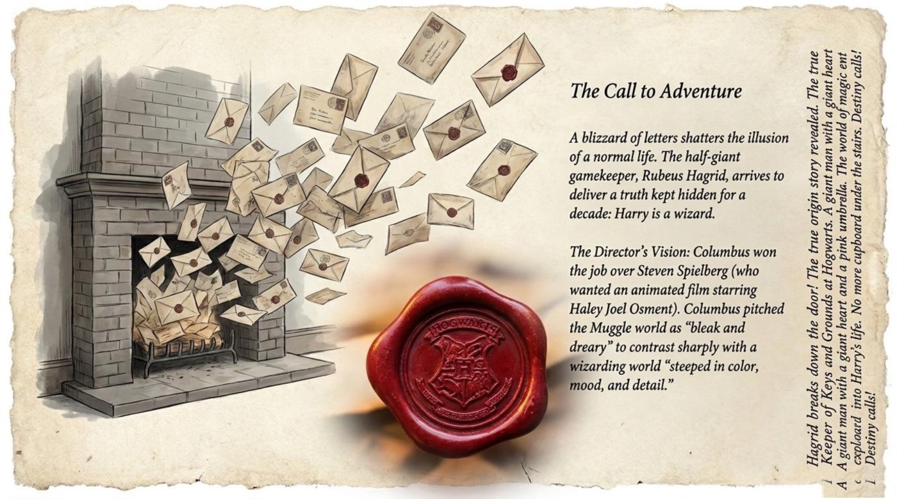
The third stage is crossing into the magical world: "From purchasing supplies in bustling Diagon Alley to learning the dark history of Lord Voldemort — the wizard who left him with his fetching scar." 🎬 The panel explains what it calls The Casting Rule: J.K. Rowling insisted on a strictly British and Irish cast, a mandate that brought in legendary actors to ground the magic in reality, like John Hurt, who brought immense gravitas to the role of the wandmaker Mr. Ollivander. 💡 Learn new words in themed sets drawn from one place — shops, objects and professions of Diagon Alley — because grouped vocabulary sticks far better than random lists.
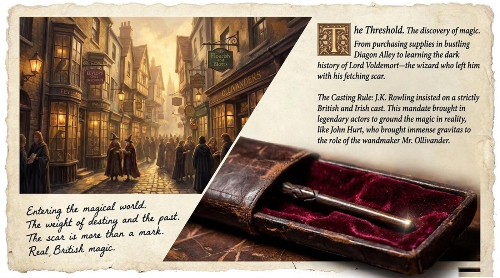
Aboard the Hogwarts Express, the trio forms: "Aboard the Express, Harry makes two friends — Ron Weasley, all pluck and luck, and the highly studious Hermione Granger. It is a first taste of true belonging." 🎬 The panel adds a piece of train trivia: the studio rejected the Southern Railway engine 34027 Taw Valley for looking too modern and selected the classic GWR 4900 Class 5972 Olton Hall instead, to guarantee a timeless, storybook aesthetic. 💡 Practice two-adjective character sketches — all pluck and luck, highly studious — and then write one for a friend or colleague in the same compressed style.
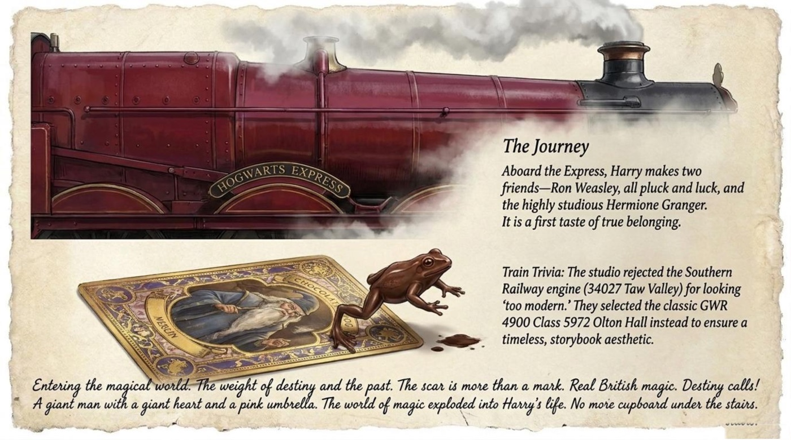
The arrival is the emotional heart of the first half: "Hogwarts School of Witchcraft and Wizardry reveals itself not just as an ancient school, but as the home Harry never had." The deck calls the castle a sanctuary of magic. 🎬 It quotes Roger Ebert's observation that the castle "looks about as real as Xanadu in Citizen Kane... continues the feeling of an atmospheric book illustration," and notes the location filming at Alnwick Castle and Gloucester Cathedral. 💡 When you describe a place that matters to you, borrow this two-layer formula: first the physical image, then the emotional claim (not just a school — a home).
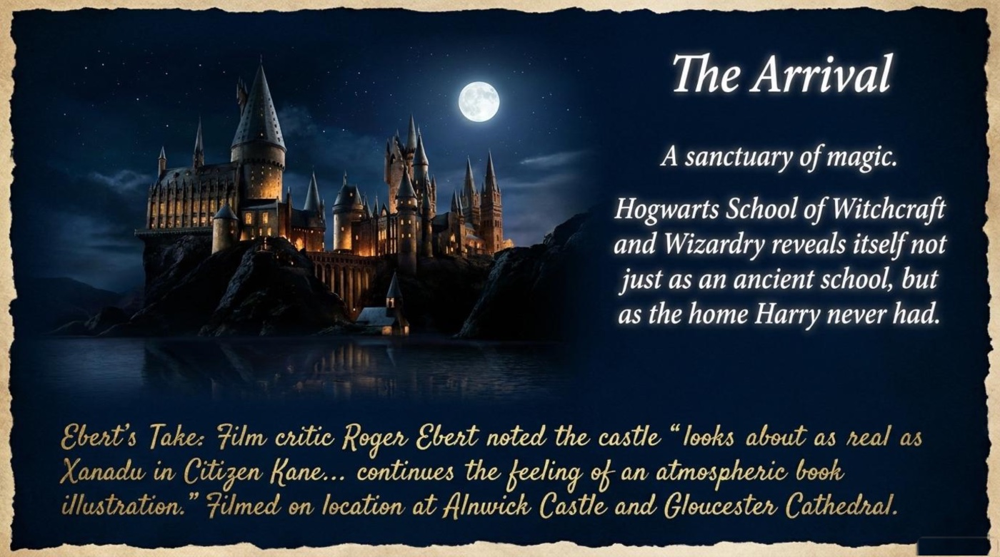
The Sorting Hat scene turns character into place: "The Sorting Hat peers into minds. Harry, Ron, and Hermione find their courage in Gryffindor, while making an instant rival in the haughty Draco Malfoy of Slytherin." 🎬 The panel celebrates the teachers as a who's who of British acting: Richard Harris exudes calm as Dumbledore — a role he only accepted after his granddaughter threatened to never speak to him again — while Maggie Smith rules as McGonagall at Rowling's specific request. 💡 Reporting verbs such as exudes, rules, brings and grounds let you describe performances and people with precision instead of repeating the flat verb is.
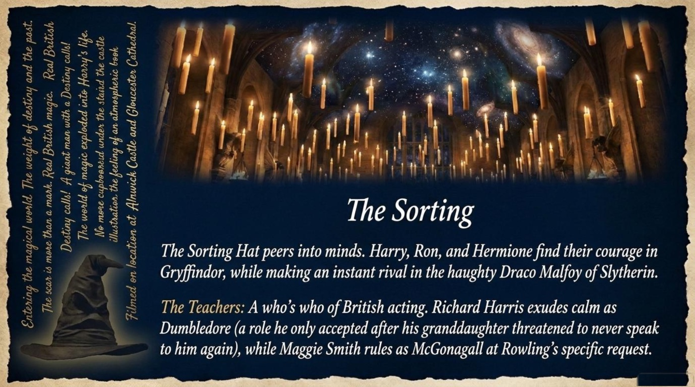
One chaotic night cements the friendship: "A mountain troll in the girls' bathroom cements a trio. When Hermione takes the blame to save the boys, ostracism gives way to an unbreakable bond of friendship." The handwritten annotation on the panel records the film's most quotable panic — Troll in the Dungeon! 🎬 The trio's real-life casting stories match the panel's theme of determination: Rupert Grint won the role of Ron by sending a video of himself rapping because he has ginger hair, and Emma Watson crushed five interviews, outperforming thousands of girls, while the troll itself was brought to life through CGI by Sony Pictures Imageworks. 💡 Retell this episode in exactly five sentences — setup, danger, mistake, courage, bond — and you will have practiced the most common shape of an English narrative paragraph.
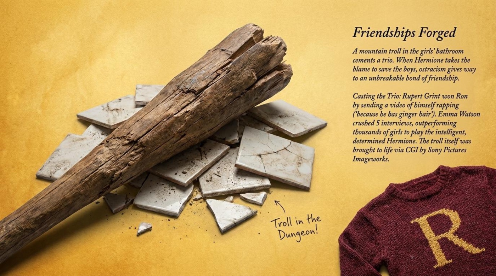
The mood darkens at Christmas: "Christmas brings an Invisibility Cloak and a mirror that reflects the deepest desires of the heart. But dark, secret forces are stirring within the castle walls." The handwritten note beside the Mirror of Erised warns in one blunt line: Desire is a dangerous thing. 🎬 On the Potions Master, the deck notes that Alan Rickman's Snape brings mystery and seriousness, and it quotes Roger Ebert on how Rickman dialed his performance to "just this side of too much," drawing out his words until they seemed ready to snap. 💡 The mirror's engraved inscription — "Erised stra ehru oyt ube cafru oyt on wohsi" — is a decoding puzzle: read the words backwards and the hidden sentence reveals itself, which makes it a perfect spelling and word-order brain-teaser for the classroom.
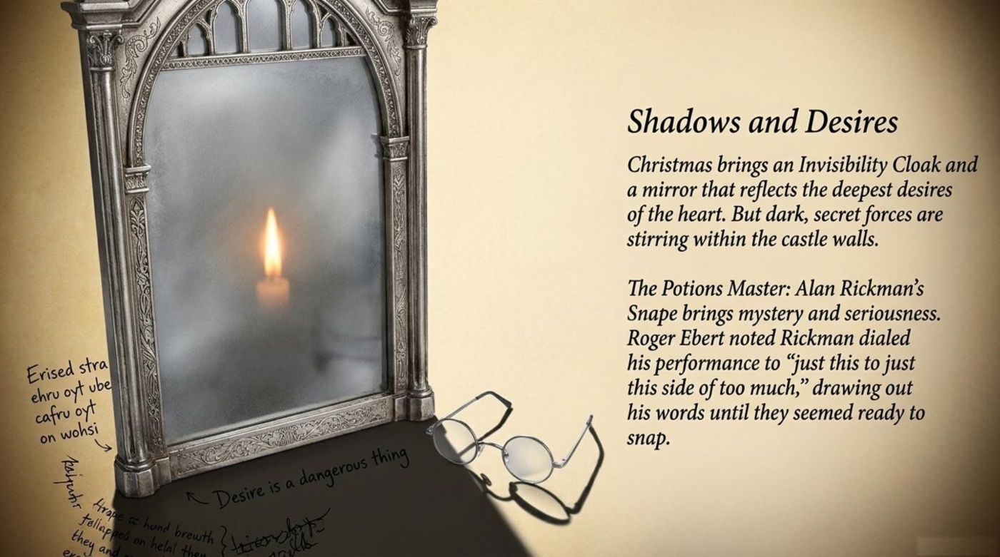
The final act turns on the Philosopher's Stone: "Suspecting a plot to steal Nicolas Flamel's immortal Philosopher's Stone, the trio descends through a forbidden trapdoor. They face a three-headed dog, strangling Devil's Snare, and a deadly swarm of flying keys." 🎬 The panel credits what it calls Practical Magic: creature effects by Jim Henson's Creature Shop, alongside prosthetics by Nick Dudman, provided the tactile, terrifying reality of Fluffy and the film's magical beasts. 💡 The sentence structure here is worth copying — a chain of three dangers separated by commas builds rhythm and suspense in any action paragraph.
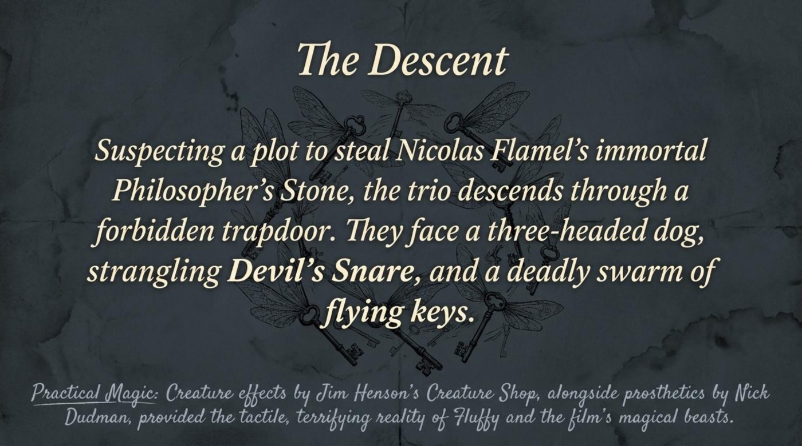
Loss arrives in the service of friendship: "A virtuoso game of deadly chess leaves Ron incapacitated. The children prove their worth through intellect, bravery, and a willingness to sacrifice for the greater good." 🎬 On adaptation, the deck reports that screenwriter Steve Kloves stayed religiously faithful to the novel, and that this devotion — while earning immense praise from fans — produced a hefty 152-minute runtime that some critics argued was too slavish to the source material. 💡 This is ideal material for an opinion paragraph in English: weigh faithful adaptation against creative freedom, and support your position with the 152-minute fact.
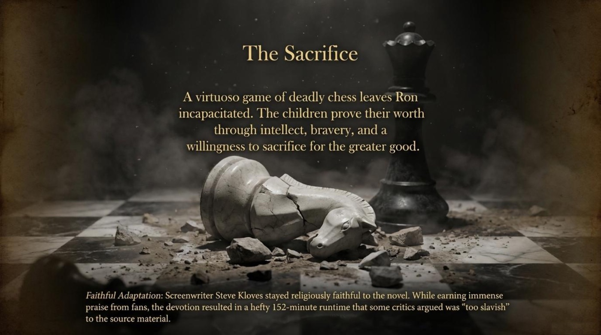
The confrontation strips the villain of his cover: "Harry faces Quirrell and the weakened, terrifying visage of Lord Voldemort. Harry's pure intent secures the Stone, while his mother's lingering sacrifice protects him from the Dark Lord's touch, turning his enemy to ash." 🎬 The panel unpacks the dual role: actor Ian Hart played the stuttering Quirrell and also voiced the terrifying Voldemort, Richard Bremmer provided the physical form, and Industrial Light & Magic crafted the horrifying CGI face beneath the turban. 💡 Practice cause-and-effect sentences with while and turning..., exactly as the deck does — they let you pack two consequences into one elegant line.
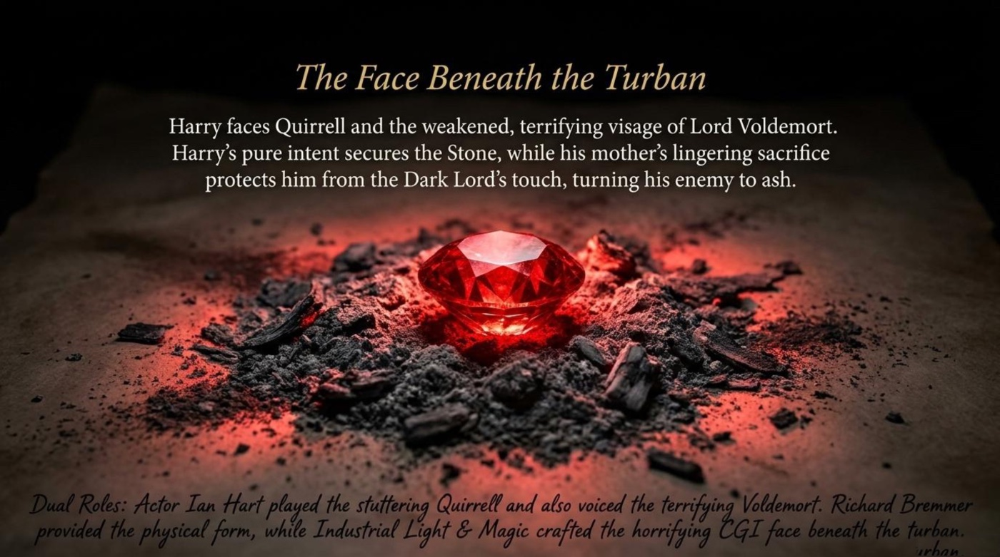
The return is bittersweet and quietly triumphant: "Gryffindor wins the House Cup, and the school year ends. Harry returns to the ordinary Muggle world of the Dursleys, but he leaves transformed. He has finally found a real home." 🎬 The panel closes with the film's legacy — a red-blooded adventure that grossed over $1 Billion — together with Roger Ebert's admission that the film succeeded in creating a world with its own magical rules. 💡 End your own retellings with a but he leaves transformed sentence, because a clear statement of change is what separates a report from a story.
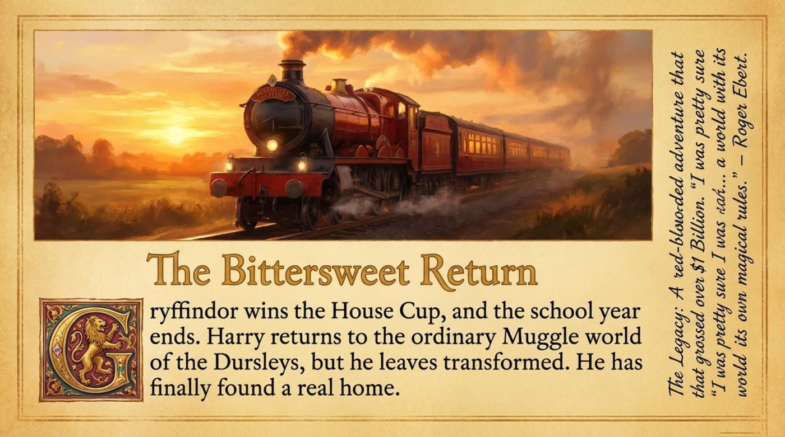
The deck's strongest teaching value is its vocabulary. The words below all come directly from the panels, and each entry gives the literal meaning, the contextual meaning inside this story, the deck's own example with a short explanation, and a note on why the word matters for your English. Read the entries first, then test yourself with the flip-cards underneath. 📌 Remember that every one of these words belongs to the story's emotional arc, which makes them easier to memorize as a set.
drudgerynoun
Literal meaning: hard, dull, tiring work that seems to never end.
In the story: Harry's entire childhood, compressed into one heavy word.
The deck's example: "For eleven years, it is a life of drudgery, entirely devoid of magic." The panel explains the word through absence — the life is entirely devoid of magic, so drudgery here means routine with zero wonder, comfort or hope.
💡 Why it matters: it is a powerful word for essays about routine: the drudgery of daily chores, office drudgery.
devoid ofphrase, formal
Literal meaning: completely lacking something.
In the story: the cupboard holds no magic, warmth or comfort at all.
The deck's example: "a life of drudgery, entirely devoid of magic." The intensifier entirely makes the absence absolute, which is exactly what the sentence needs.
💡 Why it matters: it is a precise formal upgrade for without: devoid of detail, devoid of emotion.
shatterverb
Literal meaning: to break something hard and brittle into many pieces.
In the story: the flood of Hogwarts letters destroys the illusion of a normal life in an instant.
The deck's example: "A blizzard of letters shatters the illusion of a normal life." The metaphor treats normality as glass and the letters as hail.
💡 Why it matters: record, illusion, myth, dream and confidence can all shatter — a high-value verb for dramatic change.
steeped inphrasal verb, literary
Literal meaning: left in a liquid long enough to absorb it, like tea leaves in hot water.
In the story: the wizarding world is soaked through with color, mood and detail.
The deck's example: the Muggle world is "bleak and dreary" while the wizarding world is "steeped in color, mood, and detail." The contrast is the point — one world is drained, the other saturated.
💡 Why it matters: elegant for atmosphere: a city steeped in history, a novel steeped in melancholy.
plucknoun, literary
Literal meaning: brave, spirited courage; determined nerve.
In the story: Ron's defining quality alongside his accidental good luck.
The deck's example: "Ron Weasley, all pluck and luck." The alliterative pair sketches a loyal hero who wins by nerve and chance rather than genius.
💡 Why it matters: a compact compliment: she showed real pluck in the interview.
sanctuarynoun
Literal meaning: a place of safety and shelter; historically, a holy place that offered protection.
In the story: Hogwarts as the refuge Harry never had.
The deck's example: "A sanctuary of magic." The panel adds the emotional layer directly: the school is "the home Harry never had."
💡 Why it matters: perfect for describing safe spaces: the library is my sanctuary.
haughtyadjective
Literal meaning: proudly arrogant; behaving as if you are above other people.
In the story: Draco Malfoy's instant, nose-in-the-air hostility toward the trio.
The deck's example: "an instant rival in the haughty Draco Malfoy of Slytherin." One adjective does the work of a whole paragraph about visible pride.
💡 Why it matters: a precise character word for pride you can see in tone, posture and sneer.
ostracismnoun
Literal meaning: exclusion from a group by collective dislike or neglect.
In the story: Hermione's early loneliness, which ends the moment she protects the boys.
The deck's example: "When Hermione takes the blame to save the boys, ostracism gives way to an unbreakable bond of friendship." The panel frames friendship as the antidote to exclusion.
💡 Why it matters: essential for topics on bullying, inclusion and belonging.
incapacitatedadjective, formal
Literal meaning: made unable to move, act or function.
In the story: Ron is knocked unconscious by the giant chess game, and the trio loses its strategist.
The deck's example: "A virtuoso game of deadly chess leaves Ron incapacitated." The formal register raises the stakes of a game scene.
💡 Why it matters: use it for injuries, outages and absences: the system was incapacitated for hours.
Test yourself with the cards below. Read the front, say the meaning aloud, and then flip the card to check yourself. The Flip all cards button turns the whole set over at once, and every card is keyboard-friendly — press Tab to reach a card and Enter or Space to flip it. ⚠️ Notice that each card rotates through five house-like accent colors, so try to recall a word together with its card's color for stronger memory anchoring.
Beyond plot and vocabulary, the deck is a study in symbolism. Each recurring image below carries an explicit interpretation in the panels' text, and the deck's own words are quoted for you. It is worth reading them as a set, because together they form the moral architecture of the story.
The deck's marginal chant repeats it obsessively: "Remember the cupboard... always the cupboard. Eleven years. No magic." and then, with rising urgency, "There must be more than this. There has to be." The panel's main text defines the cupboard as "a claustrophobic space under the stairs" where "it is a life of drudgery, entirely devoid of magic." The cupboard is the ordinary world of every hero's journey: the small, safe, suffocating life that the hero must outgrow. For a language learner the symbol translates directly — the comfort zone is a cupboard, and fluency is the letter that keeps arriving until you finally open the door.
The deck states it plainly: "The scar is more than a mark." and "The weight of destiny and the past." The scar is the past permanently written on the body — a history Harry did not choose but must understand, delivered by "the wizard who left him with his fetching scar." It also binds Harry to his enemy, which means the wound and the story are the same thing. The lesson for readers is that a single visible detail can carry an entire backstory, and that is exactly what strong descriptive writing in English does with one well-chosen image.
The deck describes "a mirror that reflects the deepest desires of the heart," and its handwritten annotation delivers the verdict: "Desire is a dangerous thing." The engraved inscription — "Erised stra ehru oyt ube cafru oyt on wohsi" — famously reads "I show not your face but your heart's desire" when decoded backwards. The mirror symbolizes the danger of living inside your dreams instead of acting on them, and it sits at the exact midpoint of the story like a warning sign. Remember that motivation matters only when it moves you forward — and that thought prepares the final symbol.
The climax turns on motive: "Harry's pure intent secures the Stone, while his mother's lingering sacrifice protects him from the Dark Lord's touch, turning his enemy to ash." The Stone — immortal, priceless, the object of a murder plot — accepts only the person who wants to find it but not to use it. Pure intent, plus inherited love, defeats raw power, and the panel's image of the glowing gem resting on a pile of ash makes the moral unmistakable. It is the deck's core thesis: what you want, and why you want it, decides what you can safely hold.
The quiz below checks your understanding of the story, the vocabulary and the production facts from the deck. Choose an answer and the page responds instantly: correct answers glow green, wrong answers shake red, and a short explanation always follows. Your score and progress dots update live, and a final result panel appears after the last question. ⚠️ It is best to finish the whole quiz before scrolling back through the article.
The deck's final panel shows a dark-haired boy and a white owl on a stone windowsill, gazing toward a distant castle, under the caption "Some stories begin where you least expect them." Its closing line is the one worth memorizing: "Magic is real, if you know where to look." That sentence is addressed as much to the language learner as to the film audience, because fluency also begins in unexpected places — a film retrospective, a casting anecdote, a single well-quoted review. The boy on the windowsill is every reader who finished the story and returned to ordinary life with new eyes.
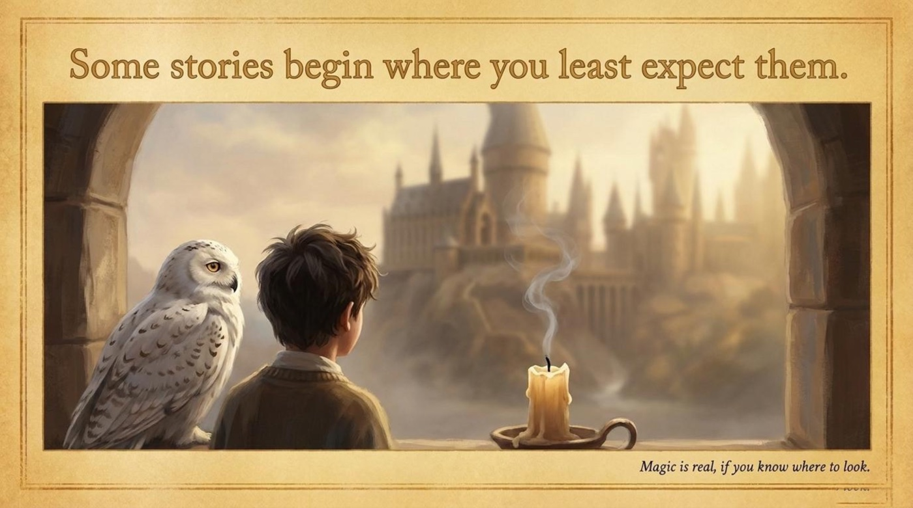
The main takeaway from the material is transformation through belonging. Harry leaves transformed because he has finally found a real home, and language learners transform the same way — by finding a story worth retelling and returning to it until it becomes their own. Here is the call to action: retell one panel of this story aloud in English today, replay the flip-cards and the quiz tomorrow, open the original deck in the Lesson Files below, and then watch the film with the vocabulary list beside you. "Magic is real, if you know where to look" — and so is fluency.
The original illustrated presentation deck accompanies this article. Open it in a new tab to review the panels alongside the lesson.
The file opens in a new tab and stays in the same folder as this page.